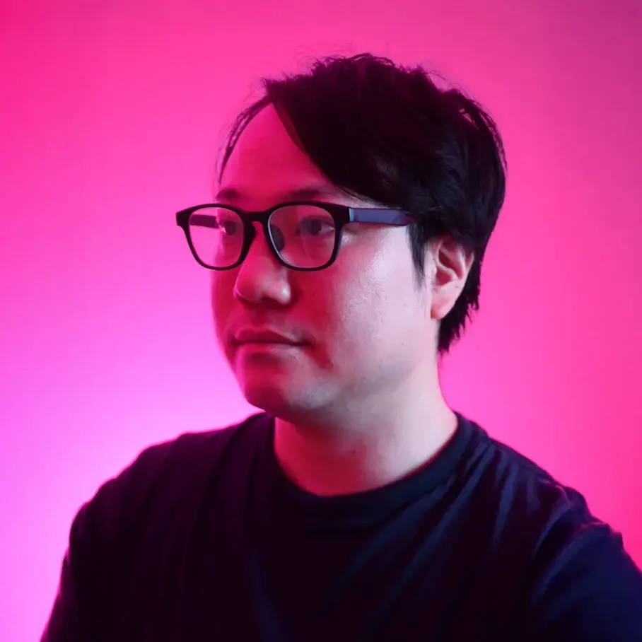

失敗談から学ぶ
書籍やインターネットでは探しきれない実体験を、そのまま終わらせず次の一手に変えます。

DIRECTION PLUS / D+
ディレクションって学べる機会があまりに少なくありませんか？
そんな要望に応えるべくD+が立ち上がりました。
ABOUT / 何をする場か
書籍やインターネットでは探しきれない実体験を、そのまま終わらせず次の一手に変えます。
最新のAIツールを、ディレクションの現場でどう使うか、どう成果を出すかまで具体化します。
異なる企業、異なるコミュニティや立場が交わることで、新しい視点と付加価値を生みます。
VALUE / 名前に込めた意味
これまでのディレクションに、AIの手札を加えていく。昨日までの限界を突破し、クリエイティブの質を次の次元へ引き上げます。
ディレクション力を、コミュニティや会社の壁を越えてプラスしていく。一人の知見を全員の武器に変え、共創の価値を最大化します。
ディレクションを学ぶ機会を増やし、実践を共有できる場を広げていく。孤独な試行錯誤を、共に高め合える価値ある時間に変えていきます。
TARGET / 巻き込みたい人々
これからディレクションを学んでいきたい人々。現場のリアルな空気に触れながら、一歩先を行くための実践的な糧を得ることができます。
ディレクション力をもう一度学び直したい人々。これまでの経験に最新の知見を掛け合わせ、自身のスキルをさらなる高みへとアップデートします。
自社のディレクションをアップデートしたい人々。チーム全体の生産性と品質を底上げし、プロジェクトを確実に成功に導く組織力を養います。
ROADMAP / ロードマップ
なぜD+発足に至ったのか！？を共有しながら、5/11ウェビナーの構成案を公開の場で詰めます。
テーマは「リアルな失敗談」。D+の事務局メンバーで一次情報をベースに、学びを共有します。
テーマは「まだ未定」。ゲストをお呼びして一次情報をベースに、学びを共有します。
ウェビナー参加の拡張と第2回企画へつなげながら、6月まで運営基盤を整えます。
TEAM / チームD+
事務局長
Web・IT企業の採用・組織支援。3,000名の対話実績に基づく「目利き」と「仕組み化」で、人材ミスマッチを防ぎ、事業成長を裏から支えます。
事務局メンバー
集まれ！Webディレクターの森主催。Webディレクター歴9年。ブランディング、サイト構想、ゲスト調整、クリエイティブ制作をリード。

事務局メンバー
Webディレクター兼UXデザイナー。Web・情報設計とUXが主戦場。「知識は足し算、アイディアは掛け算」を信条に、最良のクリエイティブを。
事務局メンバー
合同会社ゆらり｜一般社団法人ディレクションサポート協会（DiSA）会長｜Adobe Community Expert｜まるみデザインファーム｜Webディレクターの森
事務局メンバー
日本ディレクション協会のファウンダー/代表理事。アプリ・Web制作、コミュニティ運営、SNS活用まで越境して場を広げる。
CONTACT / 次の一歩
ウェビナーや座談会の案内はPeatix、またはディレ森・DiSAの各サイト、SNSにてお知らせします。